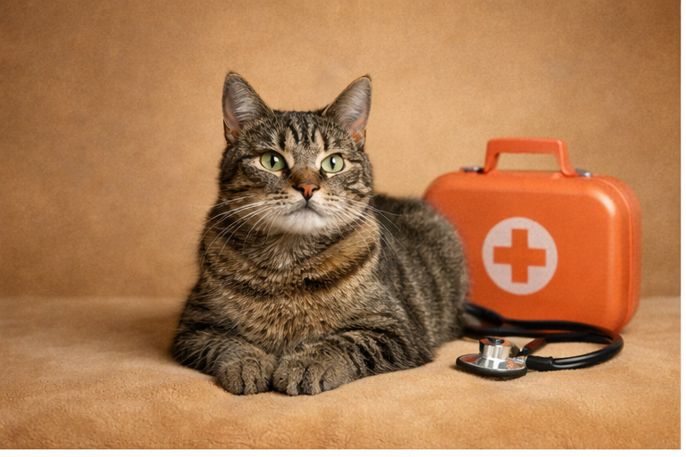
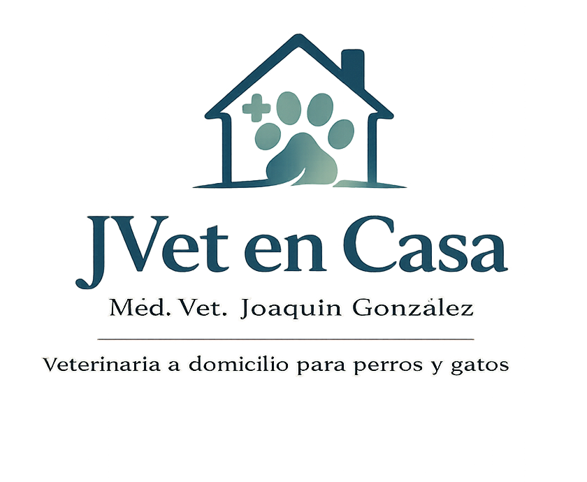
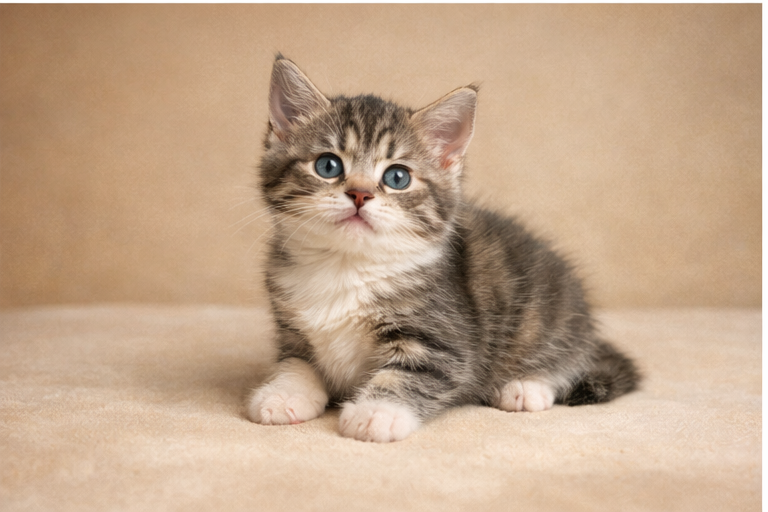
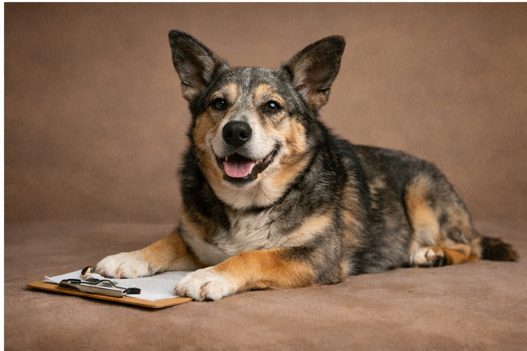

Consulta veterinaria a domicilio
Consulta de salud por enfermedad, decaimiento o control general, con atención ordenada, cercana y adaptada al hogar.
Agendar visitaEn JVet en Casa entregamos atención veterinaria a domicilio para perros y gatos, con un enfoque cercano, ordenado y pensado para disminuir el estrés del paciente en su propio entorno.

Una presentación clara de los principales servicios de JVet en Casa, con un estilo cercano, profesional y fácil de entender.

Consulta de salud por enfermedad, decaimiento o control general, con atención ordenada, cercana y adaptada al hogar.
Agendar visitaAtención preventiva para perros y gatos, con evaluación previa del paciente y orientación clara para sus cuidados.
Agendar visita
Atención inicial preventiva con orientación al tutor para comenzar el calendario sanitario de forma más cómoda y tranquila.
Agendar visita
Incluye consulta clínica, hemograma y perfil bioquímico para una evaluación preventiva más completa, sin ecografía abdominal.
Agendar visitaUna sección aparte para servicios que requieren evaluación, contexto clínico o pueden variar según el paciente y la comuna.
Algunos procedimientos y atenciones complementarias se coordinan de forma personalizada, priorizando el bienestar del paciente y la claridad para el tutor.
Puedes escribir por WhatsApp para consultar disponibilidad, resolver dudas y coordinar la visita según el motivo de atención.
Una experiencia veterinaria pensada para transmitir confianza, cercanía y orden desde el primer contacto.
Méd. Vet. Joaquín González. Veterinaria a domicilio para perros y gatos, enfocada en una atención humana, clara y tranquila, evitando traslados innecesarios y el estrés de las salas de espera.
Hablar por WhatsAppAgenda tu visita por WhatsApp y consulta disponibilidad para tu comuna.
Escríbenos para consultar disponibilidad, coordinar horarios y resolver dudas sobre consulta, vacunas, chequeos preventivos y procedimientos.
Ir a WhatsApp